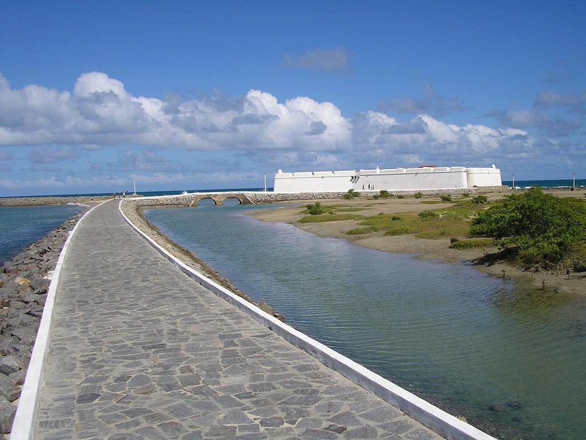
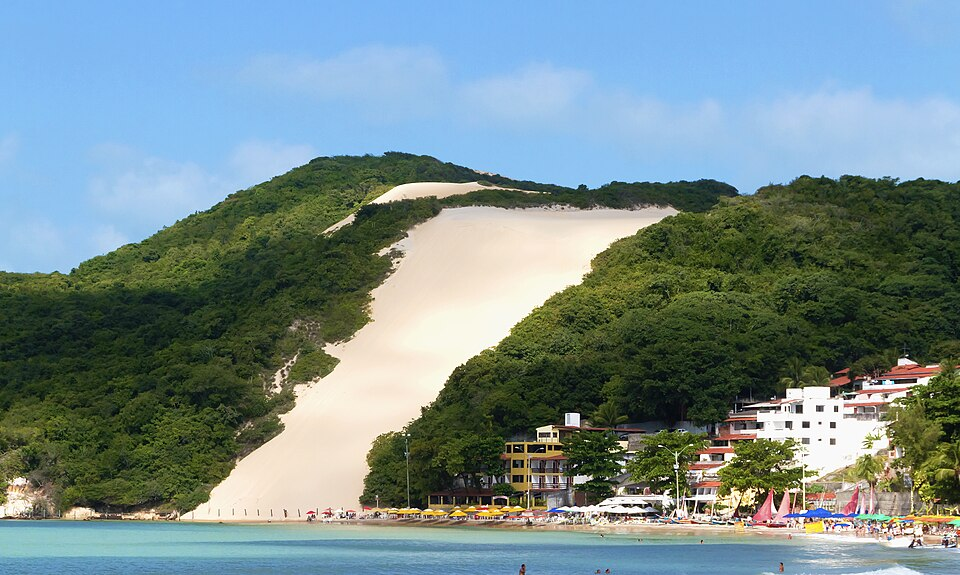
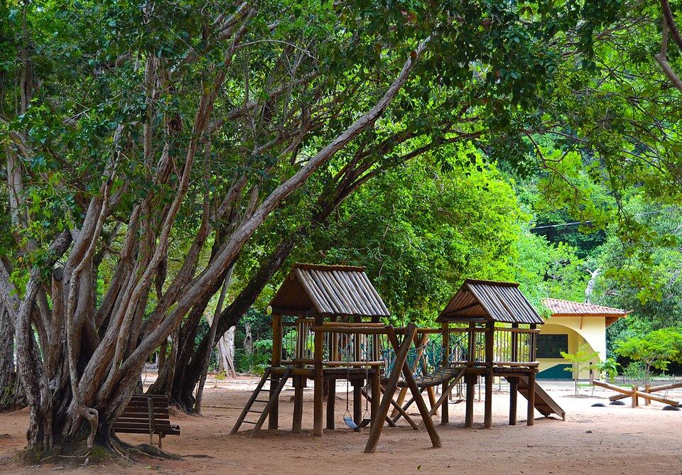
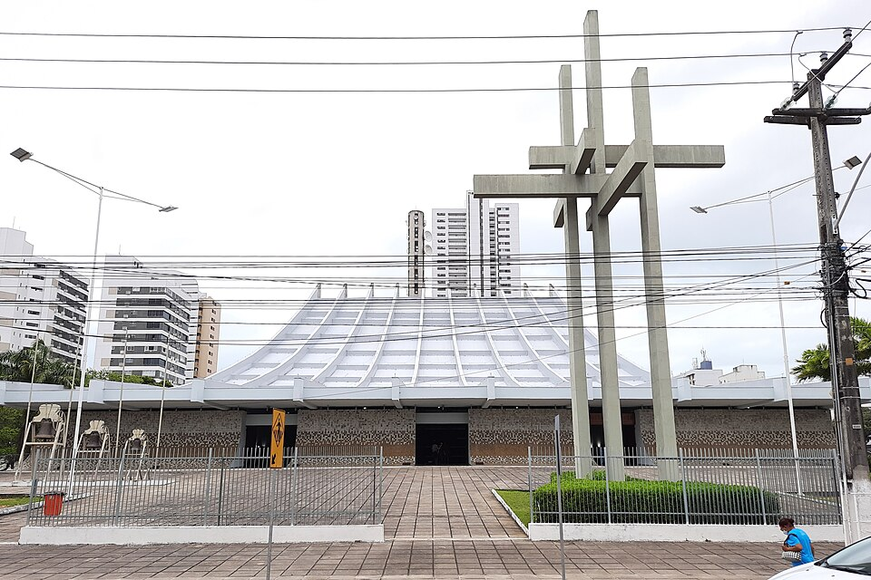
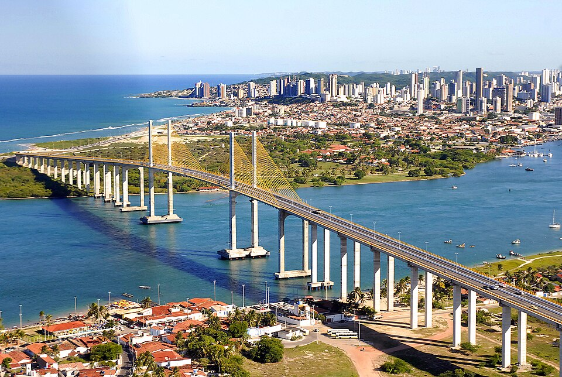

Os principais pontos turísticos de Natal, no Rio Grande do Norte, reúnem praias paradisíacas, dunas históricas e marcos culturais importantes que podem ser explorados nesse meu guia:

Fortaleza histórica construída em 1598, considerada o marco inicial da cidade de Natal. O local oferece uma rica experiência cultural e uma bela vista para o encontro do rio Potengi com o mar.
Saiba mais
Principal cartão-postal da cidade, o Morro do Careca é uma enorme duna cercada por vegetação nativa, localizada na Praia de Ponta Negra e símbolo da beleza natural de Natal.
Saiba mais
Maior reserva urbana de Mata Atlântica do Brasil, ideal para caminhadas ecológicas e contato com a natureza. O parque preserva diversas espécies da fauna e flora local.
Saiba maisMuseu que reúne exposições sobre a história, cultura, arqueologia e biodiversidade do Rio Grande do Norte, sendo uma importante referência cultural da cidade.
Saiba mais
Importante templo religioso e um dos marcos arquitetônicos da capital, com um estilo moderno que se destaca na paisagem urbana.
Saiba mais
Uma das principais obras de engenharia de Natal e liga a Zona Norte ao restante da cidade. Atravessa o rio Potengi e oferece u ma vista privilegiada do litoral e do Forte dos Reis Magos.
Saiba mais